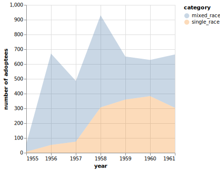

Intercountry Adoption Was Born In South Korea
by Seulgi Jung
It was 1953 when a farmer in Oregon state, Harry Holt, saw a missionary film of the plight of Korean orphans. He and His wife, Mrs. Holt went to South Korea and brought 3 children with them, which brought nationwide media coverage and attention and pushed the congress to pass the Refugee Relief Act of 1953, paving the way for evangelical christian Americans to adopt Korean orphans. The Oregon couple further adopted 5 more children, establishing an independent adoption agency, Holt Children’s Service, shortly after. .
Intercountry adoption was usually conducted in the form of Americans adopting orphans in Europe, the same race of children, after WW2, which is why the modern concept of intercountry adoption is thought to have begun since the Korean War. Holt was established before there was any systemic regulation for it and still remains as the biggest adoption agency in South Korea.
1953 - 1960: ethnic cleansing era
Adoption had not been institutionalized until Mr. Holt adopted 8 children, but it was conducted under the patriarchal social norm to inherit paternity of family. The Korean war contributed to the birth of thousands of mixed-race children who were often left behind with only single-mothers after soldiers were deployed to other regions or returned to their home country. US extraterritorial rights made it increasingly difficult for the Korean government to hold American servicemen responsible for their actions.
Ironically, the first South Korean president, Rhee Syng-Man, who himself was married to an european woman, was not happy with the emergence of mixed-racial children, further declaring “One Country One Nation" based on which the country could be reunited by eliminating what got in the nation’s way to monoethnic state and mixed-race children were perceived as an obstacle.
Mr. Rhee made it clear by ordering a directive to help foreigners who are willing to adopt mixed-racial orphans if there are, on January 15, 1954 during a cabinet meeting. “Mixed-racial orphans should be given up for overseas adoption whereas those who are not mixed-racial should firsthand be withheld, for which the Ministry of Social founded a specialized agency,” said by Park Sool-Um, Minister of Social Affair, according to Kim Hak-Mook, a former Deputy Secretary of Health and Human Services.
In intercountry adoptions from the mid-1950s to 1961, a prospective adoptive parent surrendered all rights to a specific individual or agency in Korea, without prior contact with the child, and allows the child to be brought back after the legal process has been completed. This was the typical method used by many social service agencies to arrange intercountry adoptions, with the limitation that it was difficult for a child to negotiate directly with a distant birth family, enabling adoptive parents to bring children without seeing them by paying all incidental expenses.
The number of children given up for international adoption is 4,185 from 1955 through 1961. According to the Department of Health and Human Services statistics, mixed-race children reached around fifty-five thousand across the nation during the same period, out of which 4,185 are given up for adoption. It reveals that all of the children who were adopted overseas were mixed-race for the seven years and third-quarter of mixed-race children.
1960 -1979
It was important back then to prove the legitimacy of the capitalism system as South Korea’s economy was not as prosperous as North Korea’s. Park Chung-Hee, then president and also a dictator, was sensitively aware of criticism from North Korea saying the poor South Korean government shamelessly profited off of baby exportation to the western.
Park’s regime, in order to counter this, enacted Orphan Adoption-specific legislation in 1961 that finally provided a legal basis for both domestic and international adoption. Not only were mixed-race children targeted for overseas adoption but also children with disability, children to single-mother, and unaccompanied children due to family dissolution. In particular, the intercountry adoption cases of single-mother’s child increased almost 4 times during his regime from 1960 through 1979, indicating the systemic discrimination and exclusion against mixed-race children migrated to those.
Additionally his government instituted Adoption-specific law in 1976, under which quota was allocated to international adoption according to facilitation in domestic adoption, ultimately ending intercountry adoption by 1985. His plan was later loosened, revealing his government had no intention to fundamentally haul the policy.
1980 - 2005
Although the nation attempted to drop the number of intercountry adoption cases, the adoption operation became a huge business model run by several private agencies, earning enormous amounts of foreign currency given the international adoption fee was $3,000 back then while the 1980 GDP per capita was $1,715. Chun Doo-Hwan, then president and also a dictator, further expanded the window to overseas adoption since It was a double win for the government too that had been widely campaigning for population control since the 1960s, a great business to reduce the welfare expense for childcare.
South Korea still remains one of the countries where low budget is allocated to social expenditure to this day. South Korea ranked 5th from the bottom as 14.8% among the OECD countries in terms of social spending rate to its GDP as of 2022. It is below the OECD average 21%, and far below Japan’s 24.9, whose 2022 GDP per capita is only $2,000 higher than South Korea’s.
What motivated western society to adopt children from the 3rd countries?

Intercountry adoption is a phenomenon where children from single-mother or poor family Infertility was simply not the only motivation for adoption. Western families in Europe and the United States adopt children from poor countries as a way of life in spite of having given birth to their biological children. Their decision is made in the basis of global citizenship based on humanity, solidarity with poor countries, health rights that should be provided to children, and significant interest in education rights, substantially the practice of belief by middle-class in Europe and the United States inclined to be conservative. Ironically, in reality more ‘orphans’ were produced as the church's adoption movement encouraged evangelical christians to find more children to save, turning international adoption into a huge in a sort of industry. For example, one out of 100 newborn babies used to be sent for adoption to the United States as for Guatemala.
“They are oblivious to the fact that their wealth is heritage from imperialism and colonialism, going incentivized to practice their highly ethical values - adoption - as the economic power gaps grow deeper and deeper between developed and underdeveloped countries, and the south and the north,” written by Kim Do-Hyun, a pastor at KoRoot who dedicated his life to advocate adoptee’s human rights after witnessing a young korean adoptee taking her life away in 1993 with a note left saying ‘I’m going this way to meet my biological mother,’ in a statement on overseas adoption and single-mother family requested by Korean Women’s Development Institute, a government agency. He added “they confine themselves to self-pride stemming from “doing good.”
No exaggeration that more children lost their home to be given up for international adoption

On May 16 this year, The Seoul Central District Court ordered Holt Children’s Services to Adam Crapser, an undocumented Korean adoptee, who was deported to South Korea in 2016 about $78,000 in damages after he sued the agency and the South Korean government, alleging they were liable for his botched adoption. South Korea had issued an IR-4 visa to international adoptees that left the responsibility of naturalization completion with adoptive parents for 60 years, enabling proxy adoption, until the adoption law was revised in 2012. Estimate holds that up to 49,000 adoptees in the U.S. are living as adults without citizenship, out of which Korean adoptees account for 26,000. South Korea estimates that 200,000 children, including off-the-record adoption operations, have been given up for adoption since 1953, indicating at least half of undocumented adoptees are from South Korea.
The court ruled that Holt Children’s Services didn’t fulfill the duty to follow up and verify if adoptees acquired citizenship and to report to the Minister of Justice. But it did not accept the claim that the agency intentionally created an ‘orphan’ certificate to simplify the adoption process, which is in conflict with hundreds of other adoptees who agree with Adam Crapser.
Danish Korean Right Group (DKRG) recently submitted 237 more cases to South Korea’s Truth and Reconciliation Committee for investigation since they turned in 34 cases in December 2022. Adoptees from the group shared their inadequate adoption process/documents with media, in which some were adopted by a single-parent who were ineligible for adoption by Korean law then or their names/birth dates were recorded incorrect for example.
The South Korean government has handled the matter with expediency instead of confronting discrimination and prejudice its society has carried since its beginning. It has pursued extreme efficiency by separating its society from unwanted children and tolerated the pain that affected hundreds of thousands of people’s lives. It permanently shapes the current structure of law and system, missing the chance to develop how to coexist with the minorities.